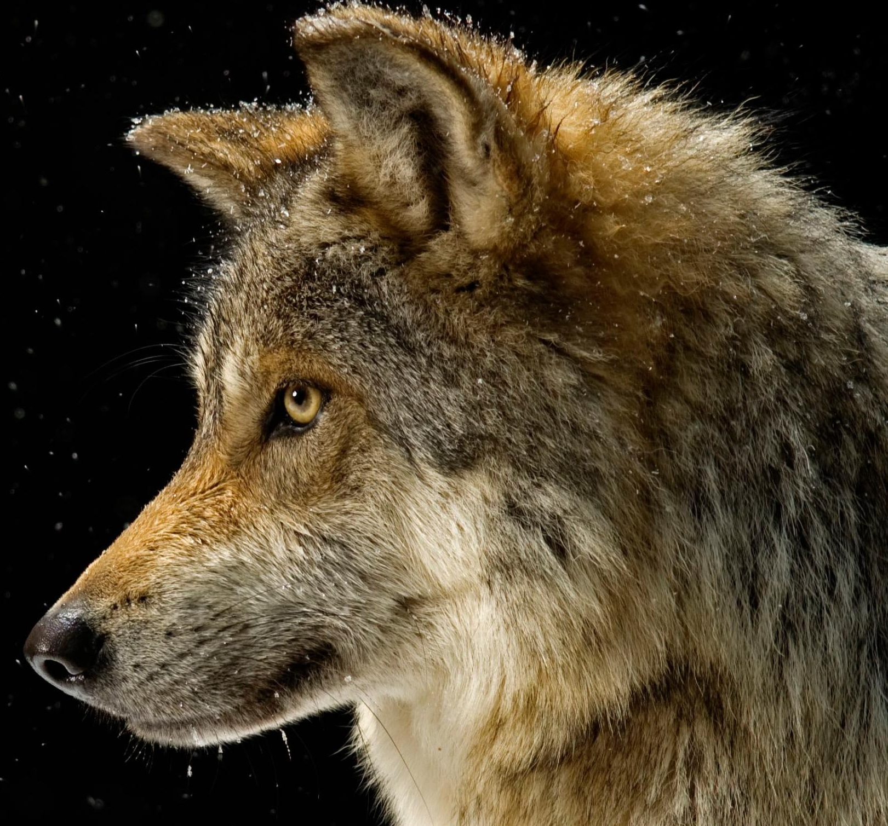
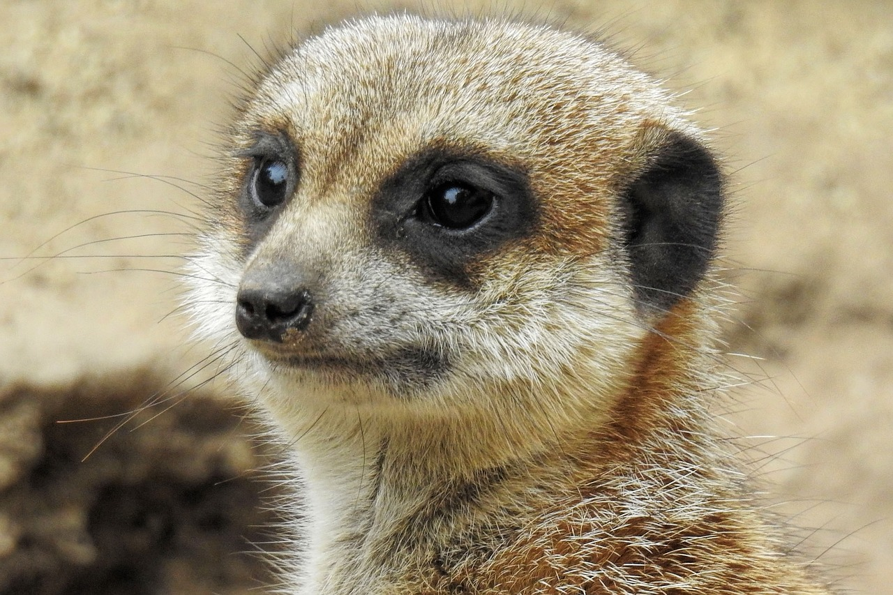

1. Un lobo mexicano(Canis lupus baileyi), una subespecie del lobo gris, fotografiado en el "Wild Canid Survival and Research Center" en St. Louis, Missouri.

2 datos para inclouir en esta columna. Datos para incluir en esta columna. Datos para incluir en esta columna. Datos para incluir en esta columna. Datos para incluir en esta columna
3 datos para inclouir en esta columna. Datos para incluir en esta columna. Datos para incluir en esta columna. Datos para incluir en esta columna. Datos para incluir en esta columna
2 datos para inclouir en esta columna. Datos para incluir en esta columna. Datos para incluir en esta columna. Datos para incluir en esta columna. Datos para incluir en esta columna
2 datos para inclouir en esta columna. Datos para incluir en esta columna. Datos para incluir en esta columna. Datos para incluir en esta columna. Datos para incluir en esta columna
Las suricatas son de las pocas especies mamiferas que asumen roles especificos para asegurar el bienestar de su familia. La socciedad de las suricatas se compone de una jerarquia con las hembras en la cima.
